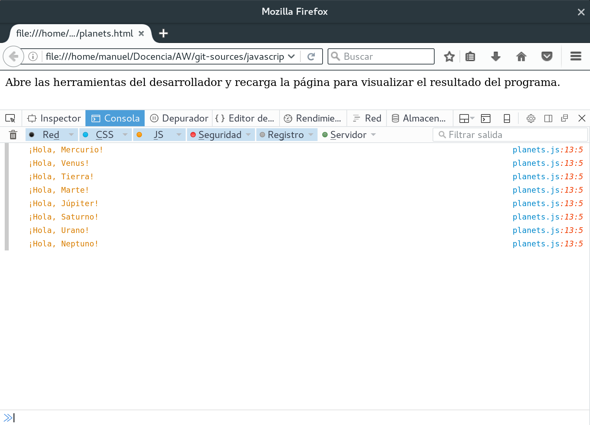
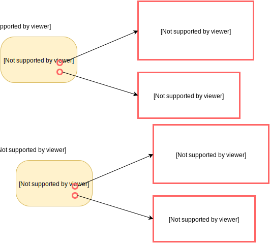
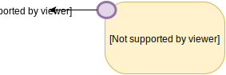
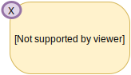
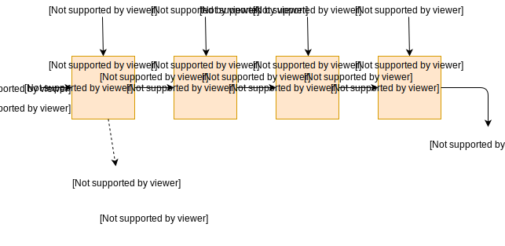

Programación en JavascriPT

El lenguaje Javascript
Javascript fue creado por Brendan Eich en 1995, para ser incluido en el navegador Netscape.
Netscape colaboraba en aquel momento con la empresa Sun Microsystems, propietaria por entonces del lenguaje Java.
Concebido inicialmente como un lenguaje «pegamento», destinado a integrar los distintos componentes de las páginas web: applets, plugins, etc.
Principales hitos en la historia de Javascript
- 1997 - HTML Dinámico
Los programas modifican dinámicamente la estructura de un documento HTML mediante la manipulación de su DOM. - 2005 - AJAX
Los programas pueden realizar peticiones al servidor desde Javascript, lo que impulsó el paradigma de aplicaciones web de una sola página (SPA). -
2009 - Node.js
Permite utilizar Javascript en el lado del servidor.
Javascript y ECMAScript
En el año 1996 Netscape decidió estandarizar Javascript.
El estándar fue publicado por la organización Ecma International. El nombre del estándar era ECMAScript.
La versión actual del estándar es ECMAScript 7 y fue publicada en junio de 2016.
Javascript en el navegador
Los principales navegadores contienen un intérprete que permite ejecutar los programas Javascript incluidos en las páginas web.
El componente del navegador encargado de esto recibe el nombre de motor Javascript.
Motores Javascript más conocidos:
- SpiderMonkey, utilizado en Firefox.
- V8, utilizado en Chrome.
- Chakra, utilizado en Edge.
¿Y Node.js?
Es un intérprete del lenguaje Javascript, pensado para ejecutarse fuera de un navegador.
Su implementación está basada en el motor V8 de Chrome.
Se utiliza principalmente para implementar las funcionalidades del lado del servidor en aplicaciones web.

Javascript más allá de la web
- Aplicaciones de escritorio, mediante Node y Electron.
Ejemplos: Atom, Visual Studio Code, etc. - Aplicaciones móviles, mediante Apache Cordova.
- Extensiones de entornos de escritorio, como GNOME Shell o Windows 10.
Un programa de ejemplo
// planets.js
// ----------
"use strict";
var planetas = [
"Mercurio", "Venus", "Tierra",
"Marte", "Júpiter", "Saturno",
"Urano", "Neptuno"
];
planetas.forEach(function(p) {
console.log("¡Hola, " + p + "!");
});
Ejecución desde Node
Si se tiene Node instalado, basta con ejecutar desde una línea de comandos:
node planets.js
Ejecución desde un navegador
Si, alternativamente, se quiere ejecutar un programa desde el navegador, ha de importarse el fichero Javascript desde un documento HTML, y abrir éste último desde el navegador.
<!DOCTYPE html>
<html>
<head>
<meta charset="utf-8">
<script src="planets.js" type="text/javascript"></script>
</head>
<body>
Abre las herramientas del desarrollador y recarga la página
para visualizar el resultado del programa.
</body>
</html>
Una vez cargada la página en el navegador, abrir la consola de Javascript.
En Firefox: Desarrollador → Consola Web (Ctrl + Mayús + K)
¿"use strict"?
Javascript es un lenguaje muy flexible.
...pero esto conlleva una gran responsabilidad.
Javascript tiene algunas características que hacen que el lenguaje sea, a veces, demasiado permisivo.
Esto hacía que programar en Javascript fuese una tarea propensa a errores.
Introduciendo la cadena "use strict" al principio del programa
hace que éste se evalúe en modo estricto.
Este modo hace que el compilador detecte y prohíba el uso de características demasiado permisivas del lenguaje:
- Utilizar variables sin declararlas.
- Borrar una variable mediante
delete. - Duplicidades en nombres de atributos y parámetros.
- Estructuras poco recomendables:
with.
El «Java» en Javascript
La sintaxis de Javascript está inspirada en la de Java.
-
Comentarios:
// Comentario de una línea /* Comentario de varias líneas */ - Declaraciones de variables y asignaciones:
var x = 3; y = y + 1; y += 3; - Pre/postincremento, pre/postdecremento:
z = x++; --x;
Sentencias condicionales
-
If-then-else:
if (x < y) { return x; } else { return y; } -
Switch:
switch(day) { case 6: case 7: console.log("Es fin de semana"); break; default: console.log("Es día laborable"); }
Bucles
- Bucle while:
while (x <= 0) { n = n * x; x--; } - Bucle do-while:
do { mult *= a[x]; x++: } while (a[x] === 0) -
Bucles for:
for (var i = 0; i < b.length; i++) { sum += b[i] + c[i]; }
-
break y continue:
while (i < x.length) { if (x[i] === ".") break; i++; }for (var i = 0; i < x.length; i++) { if (x[i] % 2 === 0) continue; z *= x[i]; }
Funciones
- Definición de funciones:
function abs(x) { if (x < 0) { return x; } else { return -x; } } -
Llamadas a funciones y métodos:
x = abs(-3); console.log("El valor absoluto de x es " + x);
Manejo de excepciones
-
Bloques try-catch o try-catch-finally:
try { funcion_no_existe(); } catch (e) { No se especifica el tipo de excepción console.error(e.message); } finally { console.log("Esto se ejecuta siempre"); } -
Lanzamiento de excepciones:
throw new Error("Fichero no encontrado"); -
Atributos de
Error:Error.message: mensaje de error.Error.stack: pila de ejecución.Error.name: nombre de la clase del error.
Cadenas de texto
- Inicialización:
o bienvar str = "Esto es una cadena";var str = 'Esto es una cadena'; -
Acceso al carácter i-ésimo:
str[2] ! // → "t"
- Métodos:
str.slice(2, 5); // → "to es" " vale ".trim(); // → "vale" str.split(" "); // → ["Esto", "es", // "una", "cadena"] str.toUpperCase(); // → "ESTO ES UNA CADENA" str.toLocaleUpperCase(); // → "ESTO ES UNA CADENA" str.startsWith("Est"); // → true "ab".repeat(5); // → "ababababab"
Operadores
- Relacionales:
==,===,<,<=,>,>=! -
Aritméticos:
+,-,*,/,% -
Lógicos:
&&,||,! -
A nivel de bit:
&,|,^,>>,<<,>>>
Arrays
- Inicialización:
var x = [4, 6, "pepe", 1, 3]; Corchetes en lugar de { } var z = []; Vector vacío var m = new Array(3); - Acceso:
console.log(x[3]); // → 1 m[2] = "Elemento nuevo"; -
Longitud:
x.length // → 5 z.length // → 0 m.length // → 3
Once rarezas de Javascript
(para alguien muy acostumbrado a Java)
- Javascript es dinámicamente tipado.
- Valores indefinidos, nulos y
NaN. - Las conversiones invisibles.
- Argumentos que sobran y faltan.
- Las funciones son ciudadanos de primera clase.
- Javascript tiene objetos, pero no clases.
- Las funciones constructoras y el operador
new. - Los arrays son flexibles, y también son objetos.
- Las funciones de orden superior sobre arrays.
- El objeto
thises de quita y pon. - Los módulos en Javascript
Rareza 1
Javascript es un lenguaje dinámicamente tipado
declaraciones de tipo
En Java es necesario declarar el tipo de una variable antes de su primer uso:
int x;
String z = "It's something";
List<Integer> lista;
En Javascript no se indica el tipo de la variable a declarar. Se utiliza siempre la palabra reservada var.
var x;
var z = "It's something";
var lista;
Lenguajes estáticamente tipados
-
Se detecta en tiempo de compilación que las operaciones se realizan sobre argumentos del tipo correcto.
Por ejemplo, el compilador avisa de errores como:
"pepe" * 24 -
Estos lenguajes pueden requerir declaraciones de tipos por parte del programador.
Por ejemplo: Java, C, etc.
-
En algunos lenguajes el compilador infiere los tipos.
Por ejemplo: Haskell, C++, etc.
Lenguajes dinámicamente tipados
-
Se comprueba durante la ejecución del programa que las operaciones se realizan sobre argumentos de tipo correcto.
Por ejemplo, en Javascript:
if (...) { y = 3 * "foo"; }El error debido a la expresión
3 * "foo"solamente se manifestará si la condición delifse cumple.
Ejemplos
-
Lenguajes sin tipos
Son poco usuales: Tcl, ensamblador, etc.
-
Lenguajes estáticamente tipados, no dinámicamente
C, Haskell, etc.
-
Lenguajes dinámicamente tipados, no estáticamente
Python, Javascript, PHP, etc.
-
Lenguajes estáticamente y dinámicamente tipados
Java, C++, C#, etc.
Tipos disponibles en Javascript
- Tipo del valor indefinido (
undefined) - Tipo del puntero nulo (
null) -
Tipo numérico (
number).El sistema de tipos no distingue entre enteros y coma flotante.
- Tipo booleano (
boolean).Incluye los valores
trueyfalse. - Tipo cadena (
string). - Tipo objeto (
object).Incluye también a arrays, funciones y expresiones regulares.
Tipos primitivos vs tipos objeto
- Tipos primitivos
- Indefinido
- Nulo
- Numérico
- Booleano
- Cadena
- Tipos objeto
- Objeto
Los tipos primitivos son inmutables
var str1 = "Cadena";
var str2 = str1.slice(0, 3); No modifica la cadena str1
console.log(str1); // → Cadena1
console.log(str2); // → Cad
Las comparaciones entre tipos primitivos se hacen por valor, no por referencia
var str1 = "Cadena";
var str2 = "Cadena";
var str3 = "Otra cadena";
str1 == str2; // → true
str1 === str2; // → true
str1 != str3 // → true
str1 !== str3 // → true
En Java str1 == str2 devuelve false, pues son objetos distintos. En cambio, str1.equals(str2) devuelve true.
Las cadenas pueden compararse lexicográficamente mediante los operadores relacionales <=, <, >= y
>:
"Pablo" < "Diana" // → true
"Pablo" < "Paolo" // → true
"alma" <= "Pablo" // → false
"Águeda" < "Pablo" // → false
Se utiliza localeCompare() para comparar según el abecedario del idioma correspondiente.
"alma".localeCompare("Pablo"); // → -1 ('alma' es menor)
"Sergio".localeCompare("Pablo"); // → 1 ('Pablo' es menor)
"Sergio".localeCompare("Sergio"); // → 0 (iguales)
Comprobación de tipos
La función typeof permite obtener el tipo de un elemento. Devuelve una cadena con el nombre del tipo.
var x = 3;
console.log(typeof(x)); // → number
console.log(typeof("Hola")); // → string
console.log(typeof(variable_que_no_existe)); // → undefined
console.log(typeof(2 < 9)); // → boolean
console.log(typeof([1, 3, 5])); // → object
console.log(typeof(null)); // → object
Aunque null es un tipo básico, typeof(null) devuelve "object".
Rareza 2
Valores indefinidos, nulos, y NaN
El valor indefinido (undefined)
Se utiliza para las variables no inicializadas y para atributos no existentes dentro de objetos.
var coordenadas = { x: 5, y: 6 };
var v;
console.log(v); // → undefined
console.log(coordenadas.z); // → undefined
El valor nulo (null)
Se utiliza para denotar una referencia a objeto nula.
var x = null; // La variable 'x' esta inicializada, pero a una
// referencia nula.
console.log(x); // → null
El valor Not-a-Number (NaN)
Se devuelve como resultado de operaciones aritméticas incorrectas:
Math.log(-2) // → NaN
parseInt("x2d") // → NaN
Los valores infinitos
Infinity y -Infinity se utilizan para desbordamientos, o para operaciones que devuelven ±∞
Math.pow(2, 10000) // → Infinity
Math.log(0) // → -Infinity
¡Cuidado con las comparaciones de NaN!
Math.log(-3) === NaN // → false
NaN === NaN // → false
Si se quiere determinar si una operación ha dado NaN como resultado, debe utilizarse la función isNaN
isNaN(NaN) // → true
isNaN(Math.log(-3)) // → true
Rareza 3
Las conversiones invisibles
Conversiones Javascript
¿A qué valor se evalúan las siguientes expresiones?
"3" * 4 // → 12
3 * 4 // → 12
"3" * "4" // → 12
"3" * "pepe" // → NaN
"12" + "20" // → 1220
"12" + 20 // → 1220
12 + "20" // → 1220
Math.log10("1000") // → 3
"10" < "2" // → true
"10" < 2 // → false
¿En qué casos se cumple la condición del if?
if (23) { .... } // → se cumple
if (-1) { .... } // → se cumple
if (0) { .... } // → no se cumple
if ("Pepe") { .... } // → se cumple
if ("") { .... } // → no se cumple
if ([1, 3]) { .... } // → se cumple
if ([]) { .... } // → se cumple
if (null) { .... } // → no se cumple
if (undefined) { .... } // → no se cumple
Cómo evitar confusiones
Con este panorama, hay dos alternativas:
- Aprenderse concienzudamente las reglas de conversión de Javascript:
Información: http://webreflection.blogspot.com.es/2010/10/javascript-coercion-demystified.html
-
[Recomendado] Hacer las conversiones explícitamente, en caso de no estar seguro/a del tipo de una expresión
Funciones
Number(...),String(...),Boolean(...)
Funciones de conversión
La función Number()
Number("32") // → 32
Number("2f3") // → NaN
Number(true) // → 1
Number(false) // → 0
Number(undefined) // → NaN
Number(null) // → 0
Number(new Date()) // → 1476191814528 (depende de fecha y hora)
Cuando la función Number se llama sobre un objeto x, se devuelve x.valueOf().
Ver también: parseInt [+]
La función String()
String(true) // → "true"
String(undefined) // → "undefined"
String(32) // → "32"
String(new Date()) // → "Tue Oct 11 2016 15:23:02 GMT+0200 (CEST)"
La función String aplicada sobre un objeto x llama al método x.toString()
La función Boolean()
- Valores falsos:
undefined,null,false,0,NaN,"". - Valores ciertos: el resto.
Boolean("") // → true
Boolean(34) // → false
Operadores de igualdad
x === y- Igualdad estrictaxeyson del mismo tipo y tienen el mismo valor.x == y- Igualdad flexiblexeypueden convertirse al mismo tipo, de modo que tras hacer la conversión tienen el mismo valor.
"25" == 25 // → true
"25" === 25 // → false
false == 0 // → true
"" == 0 // → true
2.0 === 2 // → true (recuerda: no se distingue entre tipo
// de enteros y de coma flotante)
También se definen != y !== como la negación de == y === respectivamente.
Moraleja
Utiliza siempre === y !==
Rareza 4
Argumentos que sobran y faltan
Definición de una función
function imprime_args(p1, p2, p3) {
console.log("p1: " + p1);
console.log("p2: " + p2);
console.log("p3: " + p3);
}
Llamada a una función
imprime_args(1, "bar", true);
Resultado:
p1: 1 p2: bar p3: true
El número de argumentos en la llamada a la función no ha de coincidir necesariamente con el número de parámetros en la definición
- Si se proporcionan argumentos «de más» se ignoran los sobrantes:
imprime_args("uno", "dos", "tres", "cuatro");p1: uno p2: dos p3: tres
-
Si faltan argumentos, los parámetros correspondientes tomarán el valor
undefinedimprime_args("uno", "dos");p1: uno p2: dos p3: undefined
Esto nos permite definir funciones con parámetros opcionales.
/*
El parámetro 'color' es opcional. Su valor por defecto
es 'negro'.
El parámetro 'trazo' especifica el grosor del trazo y
también es opcional. Su valor por defecto es 1.
*/
function pintar_circulo(x, y, color, trazo) {
if (color === undefined) color = "negro";
if (trazo === undefined) trazo = 1;
console.log("Pintar círculo en (" + x + ", " + y + ")" +
" con color " + color +
" y trazo de grosor " + trazo);
}
Implementación alternativa:
/*
El parámetro 'color' es opcional. Su valor por defecto
es 'negro'.
El parámetro 'trazo' especifica el grosor del trazo y
también es opcional. Su valor por defecto es 1.
*/
function pintar_circulo(x, y, color, trazo) {
color = color || "negro";
trazo = trazo || 1;
console.log("Pintar círculo en (" + x + ", " + y + ")" +
" con color " + color +
" y trazo de grosor " + trazo);
}
¿Es correcta?
Número variable de parámetros
La variable especial arguments contiene la lista de argumentos recibidos por la función
/*
Devuelve el resultado de sumar los números pasados como
parámetros. Los argumentos que no sean números se ignoran.
*/
function suma() {
var result = 0;
for (var i = 0; i < arguments.length; i++) {
if (typeof(arguments[i]) === "number") {
result += arguments[i];
}
}
return result;
}
suma(3, 4, "foo", 9) // → 16
Parámetros nominales
Utilizando objetos podemos simular el paso de parámetros nominales.
Por ejemplo, supongamos una función abrir_fichero que espera un nombre de fichero y, opcionalmente:
-
Un parámetro
solo_lecturaque indica si el fichero se abre en modo lectura o en modo lectura/escritura.Valor por defecto:
true -
Un parámetro
binarioque indica si el fichero es binario o no.Valor por defecto:
false
Ejemplos de llamadas
abrir_fichero("mio.txt");
// Abriendo fichero mio.txt en modo lectura
abrir_fichero("mio.txt", { solo_lectura: false });
// Abriendo fichero mio.txt en modo lectura/escritura
abrir_fichero("mio.txt", { binario: true });
// Abriendo fichero binario mio.txt en modo lectura
abrir_fichero("mio.txt", { binario: true, solo_lectura: false });
// Abriendo fichero binario mio.txt en modo lectura/escritura
abrir_fichero("mio.txt", { solo_lectura: true, binario: false });
// Abriendo fichero mio.txt en modo lectura
Implementación:
/*
El objeto 'ops' tiene como atributos los parámetros
opcionales.
*/
function abrir_fichero(nombre, ops) {
// Si no se han pasado parámetros opcionales, el objeto
// 'ops' habrá tomado el valor undefined. Lo inicializamos
// al objeto vacío.
if (ops === undefined) ops = {};
// Inicialización de los parámetros opcionales no pasados
if (ops.solo_lectura === undefined) ops.solo_lectura = true;
if (ops.binario === undefined) ops.binario = false;
// Cuerpo de la función
console.log("Abriendo fichero "
+ (ops.binario ? "binario " : "")
+ nombre + " en modo "
+ (ops.solo_lectura ? "lectura" : "lectura/escritura"));
}
Rareza 5
Las funciones son ciudadanos de primera clase
¿Qué significa eso?
Que las funciones son tratadas como objetos.
En particular:
- Se puede asignar una función a una variable.
- Pueden pasarse funciones como parámetros.
- Pueden recibirse funciones como resultados.
Esta característica es compartida por muchos lenguajes funcionales e imperativos:
Haskell, Scala, Erlang, C, C++, Java 8, etc.
Partimos de las siguientes definiciones:
function incrementar(x) {
return x + 1;
}
function duplicar(x) {
return 2 * x;
}
function cuadrado(y) {
return y * y;
}
function factorial(n) {
if (n <= 0) {
return 1;
} else {
return n * factorial(n - 1);
}
}
Asignamos algunas de estas funciones a la variable f:
var f = incrementar;
console.log(f(5));
// Imprime: 6
f = factorial;
console.log(f(10));
// Imprime: 3628800
¡Cuidado con los paréntesis!
var f = incrementar(); // INCORRECTO
// Esto realiza la llamada incrementar(undefined), y devuelve el
// valor resultante (que también es undefined a f).
console.log(f(5));
// ERROR: f no es una función
La siguiente función recibe una lista de funciones y un valor. Aplica cada una de las funciones de la lista al valor dado y muestra los resultados por consola:
function aplicar_funciones(funs, z) {
for (var i = 0; i < funs.length; i++) {
console.log("Aplicar función " + i +
" pasando " + z + ": " + funs[i](z));
}
}
Ejemplo:
aplicar_funciones([incrementar,duplicar,cuadrado,factorial], 5);
Aplicar función 0 pasando 5: 6 Aplicar función 1 pasando 5: 10 Aplicar función 2 pasando 5: 25 Aplicar función 3 pasando 5: 120
De igual modo, se puede devolver una función como resultado:
function buscar_por_nombre(nombre) {
switch(nombre) {
case "INC": return incrementar;
case "DUP": return dup;
case "SQR": return cuadrado;
case "FCT": return factorial;
}
// Si la función termina sin alcanzar un return,
// se considera que devuelve undefined
}
Ejemplo:
var g = buscar_por_nombre("INC");
console.log(g(10));
11
Funciones como expresiones
Se puede utilizar una definición de función en cualquier sitio donde se espere una expresión.
En estos casos es posible omitir el nombre de la función (función anónima)
var f = function() { console.log("Hola"); };
f();
var g = function(x, y) { return x + y; };
console.log(g(3, 5));
En el ejemplo anterior:
aplicar_funciones(
[ function(x) { return x - 3; },
function(x) { return Math.sqrt(x); },
factorial,
function(z) { return Math.log(z); } ], 2);
Aplicar función 0 pasando 2: -1 Aplicar función 1 pasando 2: 1.4142135623730951 Aplicar función 2 pasando 2: 2 Aplicar función 3 pasando 2: 0.6931471805599453
¿Puede reemplazarse la referencia a factorial por otra función anónima?
Ámbito de variables
Las variables declaradas dentro de una función tienen como ámbito dicha función:
function f(n) {
var x = ...;
// x está en ámbito dentro de la función
}
// aquí x está fuera de ámbito
Solamente las funciones definen ámbitos
El resto de bloques no.
if (...) {
var z = ...;
}
// La z está en ámbito fuera del if-then
for (var x = 0; x < 10; x++) {
var y = ...;
}
// Tanto 'x' como 'y' están en ámbito a la salida
// del bucle.
Puede arreglarse mediante expresiones funcionales invocadas inmediatamente (IIFE) [+]
Clausuras
Una función puede hacer referencia a variables declaradas en un ámbito superior
var y = 3; // variable global
var f = function(x) {
return x + y; Referencia a la variable global y
}
console.log(f(5));
// Imprime: 8
¿Y si cambio el valor de la variable y después de definir f?
y = 9;
console.log(f(2));
// Imprime: 11
Más difícil todavía
Supongamos el siguiente caso
var z = 3; // Variable global
function g() {
var z = 7; // Variable local; oculta a la global
var f = function(x) { return z + x; };
console.log(f(1));
}
g();
¿Qué imprime g()?
8 // es decir: 7 + 1
En la expresión z + x dentro de la definición de f, la aparición de z se liga a la variable z definida dentro de g, que es la que está en ámbito en el momento de crear
la función f.
Y aún más difícil
Ahora «sacamos» la función f del ámbito g devolviéndola como resultado:
var z = 3; // Variable global
function g() {
var z = 7; // Variable local; oculta a la global
return function(x) { return z + x; };
}
// La variable local z ya no está en ámbito,
// Pero la variable global z sí lo está
var h = g();
// ¿Qué imprime esto? ¿3 + 5? ¿7 + 5?
console.log(h(5));
Resultado:
12
function g() {
var z = 7;
return function(x) { return z + x; };
}
En la expresión function(x) { return z + x; }, la aparición de z queda ligada a la variable z local en g, que es la que está en ámbito en el momento de crear la función. Este vínculo
es permamente.
Tras crear la función anónima, cualquier llamada la misma utilizará siempre esta variable z, ¡aunque ya esté fuera de ámbito en el momento de realizar la llamada!
Ejemplo: incrementador
function incrementador(n) {
return function(x) { return x + n; };
}
var inc1 = incrementador(1);
console.log(inc1(5)); // → 6
console.log(inc1(9)); // → 10
var inc3 = incrementador(3);
console.log(inc3(5)); // → 8
console.log(inc3(9)); // → 12
Al comenzar la llamada a incrementador(1) se crea un entorno con el valor de la variable local n = 1
La llamada a incrementador(1) devuelve una función en la que la n está ligada al entorno correspondiente.
Al llamar a incrementador(3) se crea otro entorno distinto en el que n = 3.
La función creada en esta llamada tiene la variable n ligada a la n de este último entorno.
Ejemplo: contador
function contador() {
var n = 1;
return function() {
return n++;
}
}
var c1 = contador();
var c2 = contador();
console.log(c1()); // → 1
console.log(c1()); // → 2
console.log(c1()); // → 3
console.log(c2()); // → 1
console.log(c2()); // → 2
console.log(c1()); // → 4
Rareza 6
Javascript tiene objetos,
pero no clases
Objetos
Un objeto es una colección de atributos, cada uno de ellos asociado a un valor.
var x = {
nombre: "Ana María",
apellidos: "Gamboa Esteban",
edad: 54
};
El literal {} representa un objeto vacío (sin atributos)
var y = {};
El acceso a los atributos de un objeto se realiza mediante:
- El operador punto (
.)x.apellidos // → "Gamboa Esteban" - o bien, mediante el operador corchete
x["apellidos"] // → "Gamboa Esteban"var atrib = "nombre"; x[atrib] // → "Ana María"
El acceso a una propiedad inexistente devuelve undefined
x.noexiste // → undefined
y.nombre // → undefined
Modificación de atributos:
x.edad = x.edad + 1; // o bien: x.edad++
x["nombre"] = "Ana Josefa";
Es posible añadir atributos dinámicamente en cualquier momento:
x.direccion = "Calle Bautista, 25";
y.nombre = "Javier";
console.log(x);
// { nombre: 'Ana Josefa', apellidos: 'Gamboa Esteban', edad: 55,
// direccion: "Calle Bautista, 25" }
console.log(y);
// { nombre: 'Javier' }
...y también borrarlos:
delete x.edad;
console.log(x);
// { nombre: 'Ana Josefa', apellidos: 'Gamboa Esteban' }
Los nombres de atributos no han de ser necesariamente identificadores válidos de Javascript. En caso de no serlo, han de ir entre comillas:
var z = {
"Atributo con espacios": 21,
"14": "foo",
"false": "ok"
};
Para acceder a atributos cuyo nombre no es identificador se puede utilizar solamente la notación corchete
z["Atributo con espacios"] = 22;
La función Object.keys() devuelve un array con las claves de un objeto:
var x = {
nombre: "Ana María",
apellidos: "Gamboa Esteban",
edad: 54
};
console.log(Object.keys(x));
// [ 'nombre', 'apellidos', 'edad' ]
El operador in permite determinar la existencia de un atributo dentro de un objeto:
if ("edad" in x) {
console.log("x tiene un atributo llamado 'edad'");
}
Igualdad de objetos
Cuando se aplica el operador == o === sobre objetos, se comprueba que las referencias a ambos lados del operador apuntan al mismo objeto (igualdad al estilo de Java)
var coords1 = { x: 20, y: 30 };
var coords2 = { x: 20, y: 30 };
var coords3 = coords1;
console.log(coords1 === coords2);
// → false
console.log(coords1 === coords3);
// → true
Recuerda: en Javascript, las cadenas no son objetos; son tipos básicos.
Funciones dentro de objetos
Como las funciones son ciudadanos de primera clase, pueden ser asignadas a los atributos de un objeto:
var empleado = {
nombre: "Manuel",
saludar: function() {
console.log("¡Hola!");
}
};
empleado.saludar();
// → ¡Hola!
Este tipo de funciones reciben el nombre de métodos.
Se puede añadir métodos a un objeto ya construido:
empleado.despedir = function() { console.log("¡Adios!"); };
empleado.despedir();
El objeto this
empleado.saludar();
En toda llamada a método se distinguen tres componentes:
- Método llamado: saludar
- Argumentos (ninguno, en este caso)
- Objeto sobre el que se realiza la llamada: empleado
Cuando llamamos a un método, éste recibe, además de los correspondientes argumentos, una variable especial (this) que contiene una referencia al objeto sobre el que se realiza la llamada.
var empleado = {
nombre: "Manuel",
saludar: function() {
console.log("¡Hola, " + this.nombre + "!");
}
cambiarNombre: function(nuevoNombre) {
this.nombre = nuevoNombre;
}
};
empleado.saludar();
// → ¡Hola, Manuel!
empleado.cambiarNombre("Irene");
empleado.saludar();
// → ¡Hola, Irene!
Pueden transferirse métodos entre distintos objetos:
var otro_empleado = {
nombre: "David",
saludar: empleado.saludar
};
otro_empleado.saludar();
// → ¡Hola, David!
Se imprime el nombre de otro_empleado, porque es el objeto que recibe la llamada, aunque se llame a un método proveniente de otro objeto.
¿Qué ocurre al ejecutar el siguiente código?
var f = empleado.saludar;
f();
Podemos encapsular la creación de objetos mediante funciones constructoras:
function construirComplejo(real, imag) {
return {
r : real,
i : imag,
modulo: function() {
return Math.sqrt(this.r * this.r + this.i * this.i);
},
argumento: function() {
return Math.atan2(this.i, this. r);
}
}
}
var c1 = construirComplejo(-3, 0);
console.log(c1.argumento()); // → 3.141592653589793
var c2 = construirComplejo(1, 1);
console.log(c2.modulo()); // → 1.4142135623730951
(Más adelante veremos otra forma de crear funciones constructoras)
Problema: duplicidad de objetos función para cada objeto.
¿No podrían c1 y c2 compartir los métodos?
Posible solución:
function moduloComplejo() {
return Math.sqrt(this.r * this.r + this.i * this.i);
}
function argumentoComplejo() {
return Math.atan2(this.i, this. r);
}
function construirComplejo(real, imag) {
return {
r : real,
i : imag,
modulo: moduloComplejo,
argumento: argumentoComplejo
}
}
Ahora añadimos un método nuevo a c1:
var c1 = construirComplejo(-3, 0);
var c2 = construirComplejo(1, 1);
// ...
c1.coordenadasPolares = function() {
console.log("(" + this.modulo() + ", "
+ this.argumento() + ")");
}
Este método existe solamente dentro de c1.
¿Existe alguna manera de añadir un método simultáneamente a todos los objetos que hubiesen sido creados mediante construirComplejo?
Sí. Se puede hacer mediante prototipos.
Prototipo de un objeto
Todo objeto en Javascript tiene un puntero «secreto» que puede apuntar a otro objeto:
... o puede ser un puntero nulo:
En el primer caso decimos que el objeto apuntado es prototipo de c1.
A su vez, el prototipo de c1 puede tener otro prototipo:
De este modo tenemos una cadena de prototipos, que acabará en un objeto no tenga prototipo.
Búsqueda de atributos
¿Qué ocurre cuando se accede al atributo de un objeto?
Supongamos la expresión c1.nombre
c1.nombre
En primer lugar se intenta buscar un atributo llamado nombre dentro de c1.
c1.nombre
Si no se encuentra en c1, se busca el atributo dentro del prototipo de c1.
Si no se encuentra en el prototipo de c1, se busca dentro del prototipo del prototipo de c1. Si no se encuentra allí, la búsqueda continúa por la cadena de prototipos hasta que:
- Se encuentre el atributo en algún objeto de la cadena.
- Se llegue al final de la cadena. En este caso la expresión
c1.nombrese evalúa aundefined.
Crear objetos que apunten a un prototipo
Se utiliza la función Object.create()
La siguiente sentencia:
var y = Object.create(x);
crea un objeto y que tiene a x como prototipo:
var circulo = {
centro: { x: 10, y: 20 },
radio: 5
};
var circulo_verde = Object.create(circulo);
circulo_verde.color = "verde";
var circulo_rojo = Object.create(circulo);
circulo_rojo.color = "rojo";
console.log(circulo_rojo.color); // → "rojo"
console.log(circulo_verde.radio); // → 5
console.log(circulo_verde.centro.x); // → 10
console.log(circulo_rojo.centro); // → { x: 10, y: 20 }
Cambiar y añadir atributos al prototipo
Añadimos lo siguiente al ejemplo anterior:
circulo.grosorBorde = 2;
¿Qué ocurre con circulo_verde y circulo_rojo?
console.log(circulo_rojo.grosorBorde); // → 2
console.log(circulo_verde.grosorBorde); // → 2
«Heredan» automáticamente el nuevo atributo.
Lo mismo ocurre con las modificaciones al prototipo:
circulo.radio = 6;
console.log(circulo_rojo.radio); // → 6
console.log(circulo_verde.radio); // → 6
Sobreescritura de atributos
Un objeto puede sobreescribir cualquier atributo heredado de su prototipo:
circulo_rojo.radio = 3;
console.log(circulo_rojo.radio); // → 3
console.log(circulo_verde.radio); // → 6
El atributo sobreescrito no afecta a los demás objetos que tengan el mismo prototipo.
circulo_rojo.radio = 3;
¿Qué ocurre con lo siguiente?
circulo_rojo.centro.x = 15;
console.log(circulo_verde.centro.x);
Volviendo al ejemplo de los números complejos
var prototipoComplejo = {
modulo: function() {
return Math.sqrt(this.r * this.r + this.i * this.i);
},
argumento: function() {
return Math.atan2(this.i, this. r);
}
};
function construirComplejo(real, imag) {
var resultado = Object.create(prototipoComplejo);
resultado.r = real;
resultado.i = imag;
return resultado;
}
var c1 = construirComplejo(-3, 0);
var c2 = construirComplejo(1, 1);
Todas las funciones que se añadan al prototipo estarán disponibles automáticamente para todos los objetos que hayan sido creados previamente por construirComplejo
// Añadimos una nueva función al prototipo:
prototipoComplejo.coordenadasPolares = function() {
console.log("(" + this.modulo() + ", " + this.argumento() + ")");
}
c1.coordenadasPolares();
// → (3, 3.141592653589793)
c2.coordenadasPolares();
// → (1.4142135623730951, 0.7853981633974483)
El objeto Object.prototype
Por defecto, un objeto tiene como prototipo Object.prototype.
Object.prototype tiene algunos métodos predefinidos:
toString()valueOf()isPrototypeOf()hasOwnProperty()- [+]
Ejemplos
var c3 = construirComplejo(1, 3);
console.log(c3.toString());
// → [object Object]
prototipoComplejo.toString = function() {
return "(" + this.r + ", " + this.i + ")";
}
console.log(c3.toString());
// → (1, 3)
console.log(prototipoComplejo.isPrototypeOf(c3));
// → true
Evitar la herencia de Object.prototype
Basta con crear un objeto mediante Object.create pasando null como prototipo.
var objeto_vacio = Object.create(null);
objeto_vacio.toString(); // ERROR
El operador in tiene en cuenta tanto los atributos propios como los heredados:
var c4 = construirComplejo(1, 3);
console.log("r" in c4); // → true
console.log("modulo" in c4); // → true
Si se desea comprobar la existencia de un atributo propio, ha de utilizarse el método hasOwnProperty():
console.log(c4.hasOwnProperty("r")); // → true
console.log(c4.hasOwnProperty("modulo")); // → false
Descriptores de objeto
Hasta ahora todos los atributos de un objeto permiten la lectura y escritura de su valor asociado.
Mediante el método Object.defineProperty() podemos configurar el acceso a los atributos de un objeto.
var x = {};
Object.defineProperty(x, "ancho", {
value: 10,
writable: false
});
console.log(x.ancho);
x.ancho = 20; // ERROR
Esto permite encapsular el acceso a un atributo:
x.__alto = 10; // Este es el atributo "privado"
Object.defineProperty(x, "alto", {
// Método de acceso
get : function() { return this.__alto; },
// Método de modificación
set: function(nuevoAlto) {
if (nuevoAlto < 0) {
this.__alto = 0;
} else if (nuevoAlto > 100) {
this.__alto = 100;
} else {
this.__alto = nuevoAlto;
}
}
});
x.alto = -5;
console.log(x.alto); // → 0
x.alto = 21;
console.log(x.alto); // → 21
La función defineProperty() recibe un objeto como tercer parámetro que define las propiedades del atributo:
-
writable: true | false
Control de acceso para escritura. -
value
Valor por defecto. -
get: function() { ... }
Método de acceso. -
set: function(newValue) { ... }
Método de modificación. -
enumerable: true | false
La propiedad aparecerá en el listado devuelto porObject.keys().
Rareza 7
Las funciones constructoras y el operador new
Atributos de funciones
Las funciones de Javascript también son objetos.
Esto implica que también pueden contener atributos.
function saludar() {
console.log("Hola, mundo!");
}
saludar.numeroLineas = 1;
saludar.numeroParametros = 0;
De hecho, las funciones tienen algunos atributos predefinidos:
console.log(saludar.name) // → "saludar"
console.log(saludar.length) // → 0 (número de argumentos)
Entre estos atributos predefinidos existe uno llamado prototype, que inicialmente apunta un objeto vacío.
console.log(saludar.prototype); // → { }
¡No confundir la propiedad prototype con el prototipo del objeto función!
El atributo prototype juega un papel esencial en las funciones constructoras.
Funciones constructoras
Una función constructora es una función que se encarga de inicializar los atributos del objeto que se encuentra en la variable this.
function Complejo(real, imag) {
this.r = real;
this.i = imag;
}
Los nombres de las funciones constructoras suelen comenzar con letra mayúscula.
Una función constructora es el equivalente a un constructor de clase en Java... y a la propia clase en sí.
El atributo prototype de las funciones constructoras sirve para almacenar los métodos comunes a los objetos de la «clase».
Complejo.prototype.modulo = function() {
return Math.sqrt(this.r * this.r + this.i * this.i);
}
Complejo.prototype.argumento = function() {
return Math.atan2(this.i, this.r);
}
El operador new
Se puede invocar a una función constructora utilizando el operador new:
var x = new Complejo(-3, 0);
A continuación se describe el funcionamiento de new.
var x = new Complejo(-3, 0);
var x = new Complejo(-3, 0);
- Se crea un objeto nuevo.
var x = new Complejo(-3, 0);
- El prototipo del nuevo objeto será
Complejo.prototype.
var x = new Complejo(-3, 0);
- Se llama a la función constructora
Complejoutilizando el nuevo objeto comothis.
var x = new Complejo(-3, 0);
- Se asigna el objeto resultante a la variable
x.
Resultado
function Complejo(real, imag) {
this.r = real;
this.i = imag;
}
Complejo.prototype.modulo = function() {
return Math.sqrt(this.r * this.r + this.i * this.i);
}
Complejo.prototype.argumento = function() {
return Math.atan2(this.i, this.r);
}
var x = new Complejo(-3, 0);
console.log(x.modulo()); // → 3
console.log(x.argumento()); // → 3.141592653589793
Resumen
La expresión new C(...) se evalúa del siguiente modo:
- Se crea un nuevo objeto.
- Se establece el prototipo del nuevo objeto a
C.prototype. - Se llama a la función
C, utilizando el nuevo objeto comothis.
El operador instanceof
La expresión x instanceof C se evalúa a true si el objeto C.prototype es alcanzable ascendiendo desde x en la cadena de prototipos:
var x = new Complejo(-3, 0);
console.log(x instanceof Complejo); // → true
console.log(x instanceof Object); // → true
console.log(x instanceof Number); // → false
Rareza 8
Los arrays también son objetos
Inicialización de arrays
Un array puede inicializarse enumerando sus elementos,
var a = [23, 12, 69, 11, 34, 45];
o bien mediante el constructor Array:
var b = new Array(10);
// Todos los elementos tienen el valor 'undefined'
Los arrays son objetos
Es posible asignar propiedades arbitrarias a un array.
var a = [23, 12, 69, 11, 34, 45];
a.estaOrdenado = false;
console.log(a);
// → [ 1, 5, 3, 5, 4, esta_ordenado: false ]
Todos los arrays tienen como prototipo el objeto Array.prototype, que contiene algunos métodos de utilidad sobre arrays. [+]
Los arrays son flexibles y pueden tener «huecos»
Puede variarse la longitud de un array en tiempo de ejecución. Basta con modificar la propiedad length:
var a = [23, 12, 69, 11, 34, 45];
a.length += 2; // Ampliamos el array
console.log(a); // → [ 23, 12, 69, 11, 34, 45, , ]
a.length = 3; // Reducimos el array
console.log(a); // → [ 23, 12, 69 ]
También se puede ampliar el array añadiendo elementos fuera de su rango:
a[5] = 32;
console.log(a); // → [ 23, 12, 69, , , 32 ]
Métodos que modifican el tamaño del array:
-
push(x)
Insertaxal final del array. -
pop()
Elimina y devuelve el último elemento del array. -
unshift(x)
Añadexal principio del array, desplazando los restantes elementos. -
shift()
Elimina el primer elemento del array, desplazando los restantes elementos. -
splice(ini, num)Partiendo del elemento en la posiciónini, eliminanumelementos.
Ejemplo:
var a = [1, 2, 3, 4, 5];
// a = [1, 2, 3, 4, 5];
a.push(8);
// a = [1, 2, 3, 4, 5, 8];
a.unshift(-4);
// a = [-4, 1, 2, 3, 4, 5, 8];
a.pop(); // → 8
// a = [-4, 1, 2, 3, 4, 5];
a.shift(); // → -4
// a = [1, 2, 3, 4, 5];
a.splice(2, 2); // → [3, 4]
// a = [1, 2, 5];
Otras operaciones destructivas:
a = [4, 7, 4, 1, 3, 5];
a.sort();
// a = [1, 3, 4, 4, 5, 7]
a.reverse();
// a = [7, 5, 4, 4, 3, 1]
Operaciones no destructivas:
-
concat(arr_1, ..., arr_n)
Añade los arrays pasados como argumento y devuelve el resultado.[1, 2, 3].concat([4, 5], [6, 7, 8]); // → [1, 2, 3, 4, 5, 6, 7, 8] -
slice(ini, fin)
Devuelve el segmento[ini, fin)del array.["a", "b", "c", "d", "e", "f", "g"].slice(2, 5); // → ["c", "d", "e"]
-
join(sep)
Concatena los elementos del array intercalandosepcomo separador:["Esto", "no", "me", "gusta"].join(" - "); // → "Esto - no - me - gusta"
Búsqueda de valores:
indexOf(elem, [pos_inicial])Devuelve el índice de la última aparición de
elemen el array, o -1 si no se encuentra.lastIndexOf(elem)Devuelve el índice de la última aparición de
elemen el array, o -1 si no se encuentra.
Rareza 9
Las funciones de orden superior sobre arrays
Funciones de orden superior
Una función de orden superior es una función que recibe funciones como parámetro y/o devuelve funciones.
Javascript proporciona varios métodos de orden superior para arrays que son muy útiles en la práctica.
Iteración: método forEach
-
forEach(f)
Aplica la funciónfsobre todos los elementos del array.
var personas = [ { nombre: "Ricardo", edad: 45},
{ nombre: "Julia", edad: 24 },
{ nombre: "Ashley", edad: 28 } ];
personas.forEach(function(p) {
console.log("Hola, me llamo " + p.nombre
+ " y tengo " + p.edad + " años");
})
Funciones de transformación
-
map(f)
Aplica la funciónfa cada elemento del array, devolviendo otro array con los resultados.var a = [1, 3, 5, 2, 4]; var dobles = a.map(function(n) { return n * 2; }); console.log(dobles); // [2, 6, 10, 4, 8] -
filter(f)
Selecciona los elementosxdel array tales quef(x)devuelvetrue.var pares = a.filter(function(n) { return n % 2 === 0; }); console.log(pares); // [2, 4]
Funciones de reducción (I)
-
every(f)
Devuelvetruesi para todo elementoxdel array,f(x)devuelvetrue. -
some(f)
Devuelvetruesi existe un elementoxen el array tal quef(x)devuelvatrue.
Funciones de reducción (II)
-
reduce(f, [elemInicial])
Recorre el array de izquierda a derecha, acumulando un valor durante el recorrido.
var a = [2, 6, 9, 1];
console.log(
"Valor final: " +
a.reduce(function(acum, n) { return 2 * acum + n; }, 7)
); // → 171

Otros ejemplos
Suma de los elementos de un array
[1, 5, 7, 4].reduce(function(ac, n) { return ac + n; }, 0)
Otros ejemplos
Multiplicación de los elementos de un array
[1, 5, 7, 4].reduce(function(ac, n) { return ac * n; }, 1)
Máximo de los elementos de un array
[6, 1, 4, 3, 7].reduce(
function(acum, x) {
return Math.max(acum, x);
},
-Infinity
)
Variantes
reduce(f, [ini])
Si no se indica valor inicial, se supone que éste es el primer elemento del array.
[1, 5, 7, 4].reduce(function(acum, x) { return acum + x; })
La función reductora
reduce(f, [ini])
La función f puede recibir hasta cuatro parámetros:
- Valor acumulado hasta el momento.
- Elemento actual del array.
- Índice actual del array.
- Array sobre el que se está haciendo el
reduce.
Variantes
reduceRight(f, [ini])
Realiza lo mismo que reduce, pero recorriendo el vector de derecha a izquierda.
Rareza 10
El objeto this es de quita y pon
Partimos del siguiente código:
var a = {
nombre : "Alberto",
saludar : function() { console.log("Hola, " + this.nombre); }
}
a.saludar(); // → Hola, Alberto
Cuando ejecutamos a.saludar(), la variable this toma el valor a, que es quién realiza la llamada.
Podemos llamar al método a.saludar utilizando otro objeto cualquiera como this. Esto se realiza mediante la función call:
var b = { nombre: "Elvira" };
a.saludar.call(b); // → Hola, Elvira
La función call es útil para modelizar la herencia de clases. (Ver ejercicios)
call(objetoThis, arg1, arg2, ...)
La función apply se comporta de modo similar, pero recibe un array de argumentos:
apply(objetoThis, [arg1, arg2, ...])
var a = {
nombre: "Manuel",
saludar: function(numVeces) {
for (int i = 0; i < numVeces; i++) {
console.log("Hola ", this.name);
}
}
};
a.saludar(3);
a.saludar.call(a, 3); // equivale a lo anterior
a.saludar.apply(a, [3]); // idem
a.saludar.call( { nombre: "Olivia" }, 4);
a.saludar.apply( { nombre: "Olivia" }, [4]);
La función bind
f.bind(objetoThis, arg1, arg2, ...)
Devuelve una función que cuando sea llamada ejecutará el código de f, asignando la variable this al objetoThis pasado como parámetro, y pasando los parámetros arg1, arg2,
etc.
La función devuelta puede recibir parámetros adicionales que serán concatenados con los arg1, arg2, etc. pasados previamente a bind.
Ejemplo
/*
Llama a la función f() la cantidad de veces indicada
en el primer parámetro.
*/
function repetir(numVeces, f) {
for (var i = 0; i < numVeces; i++) {
f();
}
}
repetir(3, function() { console.log("¡Hola!"); });
¿Qué ocurre al ejecutar el siguiente código?
var a = {
nombre: "Manuel",
saludar: function() {
console.log("Hola, " + this.nombre);
}
}
repetir(3, a.saludar);
El objeto this se ha «perdido» al asignar a.saludar al parámetro f. Por tanto, la llamada f() se realiza con un this que es undefined.
var f = a.saludar;
f(); // this = 'undefined'
var f = a.saludar.bind(a);
f(); // this = a
Por tanto, arreglamos el problema anterior mediante:
repetir(3, a.saludar.bind(a));
Aplicaciones parciales
La función bind también puede utilizarse para preasignar algunos de los parámetros de una función.
function suma(x, y, z) {
return x + y + z;
}
var g = suma.bind(null, 4, 5);
// Utilizamos null como objeto 'this', porque no se utiliza
// dentro de la función 'suma'.
suma.bind(null, 4, 5) representa una llamada «a medias», en la que solamente se han pasado dos parámetros. Devuelve una función g que espera el parámetro que falta:
console.log(g(6)) // → 15
Otro ejemplo de bind:
var g = suma.bind(null, 5);
// Ahora g espera los dos parámetros restantes:
console.log(g(1, 1)); // → 7
var h = suma.bind(null, 1, 2, 3);
// He pasado todos los parámetros de 'suma',
// pero aún sigue siendo una llamada latente.
// Tengo que llamar a 'h' para que se realice la suma.
console.log(h()); // → 6
Rareza 11
los módulos de javascript
(o, más bien, la ausencia de módulos en Javascript)
Hasta la versión 6 de ECMAScript, el estándar ha especificado ningún sistema para estructurar los programas Javascript complejos en módulos.
No obstante, es posible simular módulos en Javascript mediante los mecanismos disponibles en el lenguaje.
Existen dos enfoques populares para simular módulos en Javascript:
- CommonJS
- AMD (Asynchronous Module Definition)
Ambos se detallarán en temas posteriores.
CommonJS
Utilizado principalmente en Node
Al final del módulo se asigna a una variable especial module.exports el objeto que se desea exportar.
function func1() {
...
}
function func2() {
...
}
function funcInterna() { // Función privada. No exportar
...
}
module.exports = {
func1 : func1,
func2 : func2
}
AMD (Asynchronous module definition)
Utilizado principalmente en los navegadores
Se basa en definir una función que devuelva el objeto a exportar, y pasarla a la función define.
define(["dep1", "dep2", ...], function(dep1, dep2, ...) {
return {
func1: function() {
...
},
func2: function() {
...
}
}
});
Clases estándar
El estándar de ECMAScript define las siguientes clases
(disponibles tanto en Node como en los navegadores)
- Manejo de expresiones regulares
- Manejo de fechas
- Trazas y logging
- Utilidades varias
Expresiones regulares
Una expresión regular es un patrón que representa una o varias cadenas de texto.
Por ejemplo, la expresión regular [A-Z][0-9]{3} denota el conjunto de cadenas que comienzan por una letra mayúscula y van seguidas por tres dígitos
Ejs: A324, F983, etc.
En Javascript se delimitan las expresiones regulares por símbolos /
var expr = /[A-Z][0-9]{3}/;
Las expresiones regulares son objetos con los siguientes métodos:
-
test(str): Devuelvetruesi en la cadenastrexiste una subcadena que encaja con la expresión, ofalseen caso contrario. -
exec(str): También comprueba el ajuste de alguna subcadena destrcon el patrón, pero devuelve más información sobre el ajuste producido (onullsi no hay ajuste).
Método test
/[A-Z][0-9]{3}/.test("A655");
// → true
/[A-Z][0-9]{3}/.test("Otra cosa");
// → false
/el|la|los|las/.test("Esta frase tiene un artículo");
// → false
/el|la|los|las/.test("Esta clase tiene un artículo");
// → true
/\b(el|la|los|las)\b/.test("Esta clase tiene un artículo");
// → false
El símbolo \b representa el límite de una palabra.
Método exec
A veces podemos dividir la expresión regular en varios grupos con el fin de saber qué parte de la cadena capturada corresponde a cada grupo.
Cada grupo va delimitado entre paréntesis (, )
La función test nos permite desglosar cualquier cadena que ajuste con el patrón en sus distintos grupos.
Por ejemplo, la siguiente expresión:
\d{4}\-[A-Z]{3}
ajusta con cualquier secuencia de cuatro dígitos (\d = digito) que vaya seguida de un guión (\-) y tres letras mayúsculas.
Ejs: 0249-GSW, 1934-HHG, etc.
Si queremos poder separar la secuencia de dígitos de la de letras utilizamos dos grupos:
(\d{4})\-([A-Z]{3})
var regexp = /(\d{4})\-([A-Z]{3})/;
var result = regexp.exec("Mi matrícula de coche es 8367-AWD");
La subcadena 8367-AWD ajusta con el patrón regexp, pero exec nos permite
saber qué fragmento de ésta ajusta con cada grupo
result[0] // → "8367-AWD" (Cadena completa)
result[1] // → "8367" (Primer grupo de captura)
result[2] // → "AWD" (Segundo grupo de captura)
result.index // → 25 (Posición del ajuste dentro de la cadena)
Modificadores de expresiones regulares
Se colocan tras el delimitador / final de la expresión.
i |
No distingue entre mayúsculas y minúsculas. |
g |
Ajuste global.
Permite encontrar varias ocurrencias en la misma cadena. |
m |
Buscar a lo largo de varias líneas.
Varía el comportamiento de ^ y $.
|
Ejemplos
var r1 = /Hola/i;
r1.test("hola") // → true
var str = "Hola, hola\nHola caracola";
str.match(/hola/);
// → [ 'hola', index: 6, ... ]
str.match(/hola/i);
// → [ 'Hola', index: 0, ... ]
// La búsqueda global encuentra todos los resultados
str.match(/hola/gi);
// → [ 'Hola', 'hola', 'Hola' ]
// El carácter ^ significa 'principio de cadena'
str.match(/^Hola/g);
// → [ 'Hola' ]
// Pero con el modificador 'm' significa 'principio de línea'
str.match(/^Hola/gm);
// → [ 'Hola', 'Hola' ]
Métodos de cadenas relacionados con expresiones regulares
match(regexp)
Devuelve todas las subcadenas que ajustan con la expresión regularregexp(si ésta contiene el modificadorg) o solamente la primera (en caso contrario).search(regexp)
Devuelve el índice de la primera subcadena que ajuste conregexp, o -1 si no hay ninguna.replace(regexp, nuevaCadena)Reemplaza pornuevaCadenalas subcadenas que ajusten conregexp.split(regexp)Divide la cadena en fragmentos, utilizandoregexpcomo separador.
Sobre la función replace
replace(regexp, nuevaCadena)
La cadena de reemplazo (nuevaCadena) puede hacer referencia a los grupos de captura de la expresión regular.
var r = /(\d{4})\-([A-Z]{3})/;
var str = "Mi número de matrícula es 9483-GSD";
str.replace(r, "$2/$1");
// → "Mi número de matrícula es GSD/9483"
Los objetos Date
Sirven para realizar operaciones con fechas y horas.
var ahora = new Date();
ahora.toString();
// → 'Fri Oct 14 2016 14:37:56 GMT+0200 (CEST)'
ahora.getFullYear();
// → 2016
ahora.getMonth();
// → 9
ahora.getSeconds();
// → 56
var fechaInicio = new Date(2016, 09, 26);
fechaInicio.toString();
// → 'Wed Oct 26 2016 00:00:00 GMT+0200 (CEST)'
Más información: [+]
El objeto Math
Utilidades matemáticas varias:
- Constantes:
E,LN2,PI, etc. - Máximos y mínimos:
max,min. - Números aleatorios:
random. - Redondeo:
ceil,floor,trunc,round, etc. - Potencias:
pow,sqrt,cbrt, etc. - Trigonométricas:
sin,sinh,cos, etc. - Exponenciales y logarítmicas:
exp,log,log10, etc.
El objeto console
Tiene, entre otros, los métodos:
log(str)
Muestra mensajes de depuración.warn(str)
Muestra mensajes de aviso.error(str)
Muestra mensajes de error.assert(cond, str)
Lanza unAssertionError(str)sicondno se cumple.time(id)/timeEnd(id)
Permite medir tiempos de ejecución.
Ejemplo
console.time("mi-temporizador");
// ...
// ...
// ...
console.timeEnd("mi-temporizador");
// → Imprime: "mi-temporizador: 5663.947ms"
Utilidades y herramientas
- JSDoc
http://usejsdoc.org/ - JSLint
http://www.jslint.com/ - Depuradores
- Herramientas de testing
JSDoc
Herramienta de generación de documentación, al estilo de Javadoc
/**
* Representa un número complejo representado en forma rectangular
* (parte real + parte imaginaria).
*
* Puede construirse un número a partir de su forma polar mediante
* la función {@link Complejo.desdePolar}
*
* @constructor
* @param {number} real - Componente real.
* @param {number} imag - Componente imaginaria.
*/
function Complejo(real, imag) {
this.r = real;
this.i = imag;
}
...
JSLint
Herramienta que detecta la existencia de problemas en el código contenido en un fichero de Javascript.
-
Problemas de estilo: nombres correctos de constructoras (
EstiloCamelCase), variables, espacios en blanco, etc. -
Problemas de seguridad en el código: llamadas a funciones constructoras sin
new, uso de estructuras desaconsejables (for...in,with), etc.
Ejemplo
Fichero complex_lint.js
/* Constructora de números complejos complejos */
function complejo (real, imag) {
this.r = real;
this.i = imag;
}
Ejecutando jslint complex_lint.js:
#1 Unexpected space between 'complejo' and '('.
function complejo (real, imag) { // Line 14, Pos 19
#2 A constructor name 'complejo' should start with an uppercase
letter.
return new complejo(real, imag); // Line 48, Pos 16
Corregimos los errores detectados:
/* Constructora de números complejos complejos */
function Complejo(real, imag) {
this.r = real;
this.i = imag;
}
complex_lint.js is OK.
Depuradores
Existen herramientas de depuración incorporadas, tanto en el entorno del cliente como en el del servidor.
- Lado del servidor (Node)
La depuración se realiza mediante un shell lanzado desde la línea de comandos, o bien con node-inspector, que proporciona una interfaz gráfica:
https://www.npmjs.com/package/node-inspector - Lado del cliente (Navegador)
Las herramientas para desarrolladores integradas en Firefox y Chrome proporcionan un depurador.
En cualquiera de los dos entornos puede introducirse un punto de ruptura mediante la siguiente sentencia:
debugger;
Ejemplo
// sum_square.js
// -------------
// Este programa calcula la suma de cuadrados
// del array 'arr'.
var sum = 0;
var arr = [1, 4, 8, 1, 3];
debugger; // Punto de ruptura
for (var i = 0; i < array.length; i++) {
sum += arr[i] * arr[i];
}
console.log(sum);
Iniciar depuración con Node
node debug sum_squares.js
Comandos
cont |
Salta al siguiente punto de ruptura |
step |
Avanzar paso (metiéndose dentro de funciones o no) |
next |
|
repl |
Arrancar shell para evaluar expresiones |
watch("..") |
Visualizar expresión en cada paso de ejecución |
Depuración con Node
Depuración con Node-inspector
Requiere instalación previa mediante la herramientanpm, distribuida junto con Node (ver Tema 4).
npm install -g node-inspector
node-debug fichero.js
Ejemplo:
Depuración con Firefox
Desarrollador → Depurador (Ctrl+Mayús+S)
Frameworks de testing
- Jasmine
http://jasmine.github.io/ - Mocha
https://mochajs.org/ - Chai
http://chaijs.com/
Ejemplo: Jasmine
El siguiente módulo contiene un error en la función insert
/* Inserta el elemento arr[i] en la porción del array comprendida
entre los índices 0 y i-1, suponiendo que dicha porción está
ordenada */
function insert(i, arr) {
var j = i;
while (j > 1 && arr[j] < arr[j - 1]) { ¡error!
swap(arr, j, j - 1);
j = j - 1;
}
}
/* Implementación del algoritmo de ordenación por inserción */
function insertionSort(arr) {
for (var i = 1; i < arr.length; i++) {
insert(i, arr);
}
}
module.exports = {
insertionSort : insertionSort,
insert : insert
}
Inicializamos Jasmine en el proyecto actual
jasmine init
Esto crea una carpeta spec, donde el programador coloca sus módulos de test.
Creamos la especificación en spec/insert_spec.js
//...
describe("Prueba de ordenación por inserción", function() {
it("Ordenación de array ascendente", function() {
var arr = [1, 2, 3, 4];
insertModule.insertionSort(arr);
expect(arr).toEqual([1, 2, 3, 4]);
});
it("Ordenación de array descendente", function() {
var arr = [8, 4, 2];
insertModule.insertionSort(arr);
expect(arr).toEqual([2, 4, 8]);
});
it("Inserción en array desordenado", function() {
var arr = [3, 2];
insertModule.insert(1, arr);
expect(arr).toEqual([2, 3]);
});
});
Ejecutamos los casos de prueba:
# jasmine
...
Failures:
1) Prueba de ordenación por inserción
Ordenación de array descendente
Message:
Expected [ 8, 2, 4 ] to equal [ 2, 4, 8 ].
Stack:
Error: Expected [ 8, 2, 4 ] to equal [ 2, 4, 8 ].
at Object.<anonymous> (/home/.../debugger_spec.js:16:21)
2) Prueba de ordenación por inserción
Inserción en array desordenado
Message:
Expected [ 3, 2 ] to equal [ 2, 3 ].
Stack:
Error: Expected [ 3, 2 ] to equal [ 2, 3 ].
at Object.<anonymous> (/home/.../debugger_spec.js:22:21)
3 specs, 2 failures
Finished in 0.01 seconds
Tras corregir el error:
function insert(i, arr) {
...
while (j > 0 && arr[j] < arr[j - 1]) {
...
}
# jasmine
Started
...
3 specs, 0 failures
Finished in 0.005 seconds
ECMAScript 6
En junio de 2015 se definió la versión 6 de ECMAScript.
Esta nueva versión introdujo importantes mejoras sintácticas. Entre ellas:
- Declaraciones
constylet. - Notación funcional.
- Parámetros por defecto.
- Interpolación de cadenas.
- Definiciones de clases.
Más información: http://es6-features.org/
Compatibilidad con navegadores: [+]
Definición de constantes
const EXEC_NAME = "program.exe"
Las constantes se definen como propiedades de sólo lectura
Variables de bloque
Solamente hay dos ámbitos para las declaraciones var: bloque y función.
for (var i = 0; i < a.length; i++) {
var z = ...;
}
// 'i' y 'z' siguen en ámbito tras salir del bucle
Mediante declaraciones let podemos definir variables cuyo ámbito se extiende solamente al bloque en el que son declaradas:
for (let i = 0; i < a.length; i++) {
let z = ...;
}
// 'i' y 'z' ya no están en ámbito aquí
Expresiones funcionales (arrows)
Las expresiones funcionales pueden simplificarse utilizando la notación =>
var f = function(s) { console.log("¡Hola " + s + "!"); };
equivale a:
var f = s => { console.log("¡Hola " + s + "!"); };
Si el cuerpo de la función es de la forma return exp, puede simplificarse aún más:
arr.map(function(x) { return x * 2; });
//equivale a:
arr.map(x => x * 2);
Parámetros por defecto
La versión 6 de ECMAScript permite declarar valores por defecto para los parámetros que no son especificados al llamar a la función.
function incrementar(x, incremento = 1) {
return x + incremento;
}
console.log(incrementar(6)); // → 7
console.log(incrementar(6, 4)); // → 10
Interpolación de cadenas
Nuevo tipo de cadenas delimitadas por símbolo `
(acento grave)
Pueden incluir expresiones Javascript en su interior:
var x = 3;
var p = { nombre: "Ximena", edad: 36 };
var s = `La programadora ${p.nombre} establece la variable a ${x}`;
console.log(s);
// → La programadora Ximena establece la variable a 3
Definiciones de clases
Esta característica permite definir clases en un estilo más familiar para programadores/as de otros lenguajes.
"use strict";
const EPSILON = 0.0001
class Complejo {
constructor(real, imag) {
this.r = real;
this.i = imag;
}
modulo() {
return Math.sqrt(this.r * this.r + this.i * this.i);
}
argumento() {
return Math.atan2(this.i, this.r);
}
...
...
static desdePolar(mod, arg) {
var real = mod * Math.cos(arg),
imag = mod * Math.sin(arg);
return new Complejo(real, imag);
}
static iguales(c1, c2) {
return (Math.abs(c1.r - c2.r) < Complejo.EPSILON)
&& (Math.abs(c1.i - c2.i) < Complejo.EPSILON);
}
}Esta sintaxis se traduce internamente a los mecanismos vistos anteriormente: funciones constructoras, métodos en Complejo.prototype, etc.
typeof(Complejo) // → 'function'
Este nuevo estilo también soporta herencia:
class A {
constructor(x) { ... }
}
class B extends A {
constructor(x, y) {
super(x); Llamada a la constructora de A
...
}
}
Bibliografía
- A. Rauschmayer
Speaking Javascript
O'Reilly (2014) - E. Brown
Learning Javascript, 3rd edition
O'Reilly (2016) -
Javascript Reference
MDN - Mozilla Developer Network
https://developer.mozilla.org/en-US/docs/Web/JavaScript/Reference